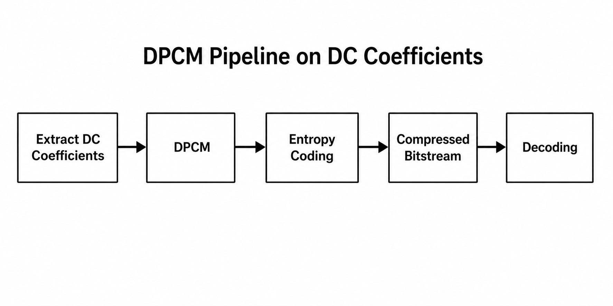
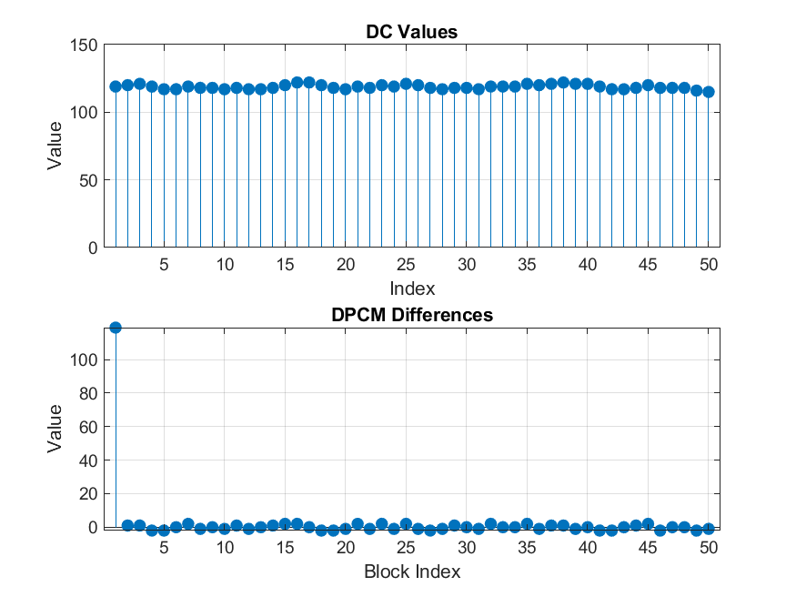

DPCM on DC coefficients
Differential pulse-code modulation reduces redundancy in the DC sequence before Huffman coding.
Why only the DCs?
Each 8×8 block has one DC DCT coefficient that tracks coarse brightness. Neighboring blocks in natural images tend to have similar DC values, so the raw DC sequence is spatially smooth. The AC coefficients are already sparse and zig-zag friendly for RLE; the DC path benefits more from prediction.

This pipeline shows how DPCM compresses DC coefficients by encoding differences between neighboring blocks. These differences are easier to compress using entropy coding, and the original values are later reconstructed by reversing the process.
What we compute
After zig-zag flattening we peel off the first sample of every block as the DC stream. DPCM replaces that stream with first-order differences (each sample minus its predecessor). The first block’s DC is kept as an anchor; the rest of the chain is deltas. Huffman then encodes the deltas, which have a tighter, more compressible histogram than raw DCs.
On decode we invert DPCM to recover the DC sequence, merge DCs back with decoded AC zig-zag data, and continue with inverse quantization and IDCT. Implementation: codec/encoders/dpcm.py, wired in hybrid_hf_compression.py.
Examples
A sequence of DC values might look like:
Original DC: 120, 123, 125, 126, 124
DPCM Output: 120, 3, 2, 1, -2
Mathematically, DPCM computes the difference between consecutive values using:
d[0] = x[0]
d[i] = x[i] − x[i−1]
Applying this to the example:
d[0] = 120
d[1] = 123 − 120 = 3
d[2] = 125 − 123 = 2
d[3] = 126 − 125 = 1
d[4] = 124 − 126 = -2
These smaller difference values replace the original DC values and are what get passed to entropy coding. Entropy coding methods such as Huffman coding can represent them using fewer bits.

- The top plot shows the original DC coefficients, which vary smoothly across neighboring block indices.
- This smooth variation indicates strong spatial correlation and redundancy in the image.
- The bottom plot shows the DPCM differences, which are much smaller in magnitude.
- Most of these values are clustered near zero, indicating reduced variation.
- The first value is large because it stores the initial reference (anchor) to enable reconstruction.
Overall, DPCM reduces redundancy by converting a smooth signal into small, near-zero differences, making the data more efficient to compress.
Observed Results
Applying DPCM to DC coefficients significantly reduces redundancy by converting a smooth signal into small differences. This produces a tighter distribution of values centered near zero.
As a result, entropy coding becomes more efficient, since smaller and more frequent values require fewer bits to encode. DPCM improves compression without affecting image quality because it is a fully reversible process.
Summary: DPCM improves compression efficiency by encoding differences instead of absolute values, reducing redundancy in the DC signal.